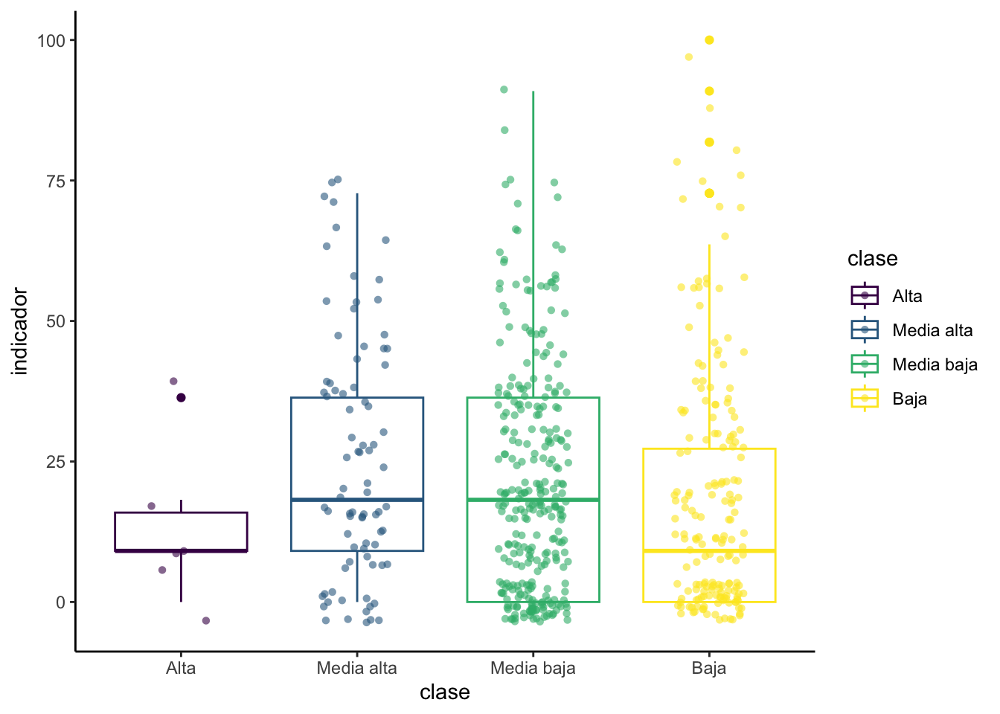

Práctica dirigida 2

FACULTAD DE CIENCIAS SOCIALES - PUCP
Curso: POL 278 - Estadística para el análisis político 1 | Semestre
2024 - 2
1.¿Qué es el análisis descriptivo?

2.Nivel de medida de una variable

3.Importancia de visualización de datos
Debido al crecimiento de la big data en los últimos años surgieron nuevas necesidades para comprender los análisis masivos de datos de una forma simple y escalable. Es entonces cuando se dirige la atención a desarrollar nuevas técnicas gráficas en distintas plataformas (ejemplos a continuación), tanto softwares como librerías de código abierto1, tal es el caso de ggplot2 en R.

Este interés por desarrollar técnicas de análisis masivo de datos y la comunicación de resultados cada vez más amigables y apta para todos los públicos dio pie a nuevas especialidades dentro de la ciencia de datos, como por ejemplo el data story telling

Gráficos por tipo de variables:

4.Análisis descriptivo
¬øCuál es la percepci√≥n de desigualdad en el Perú el 2024? ü§î
Para dar respuesta a la pregunta de investigación que guiara la práctica dirigida analizaremos algunas de las variables que forman parte de la Encuesta Nacional de Percepción de Desigualdades - ENADES 2024, que fue elaborada por Instituto de Estudios Peruanos (IEP) y Oxfam. La encuesta busca ahondar en la percepción de las diferentes formas de desigualdad en el Perú e incorpora indicadores que permiten medir la magnitud de brechas sociales y políticas como género, clase, entre otros.
Se eligieron algunas variables de la base de datos original y se dejaron por fuera valores perdidos además de realizar otras modificaciones. Para realizar alguna investigación se debe usar la base de datos original que se encuentra en el siguiente link.

library(rio) #Convocamos el paquete
data=import("pd2_enades2024.xlsx")str(data) #revisamos las variables## 'data.frame': 562 obs. of 18 variables:
## $ edad : num 19 40 47 20 37 27 36 37 35 19 ...
## $ sexo : num 1 2 2 2 2 2 2 1 1 1 ...
## $ macrozona : num 4 3 4 4 4 4 3 4 4 4 ...
## $ P02 : num 7 7 10 10 6 4 8 1 1 3 ...
## $ P07 : num 4 1 4 4 4 2 4 4 4 3 ...
## $ P08 : num 1 3 1 1 1 1 2 3 1 1 ...
## $ clase : num 3 3 3 3 3 4 3 3 4 3 ...
## $ P17 : num 4 2 4 3 1 3 2 1 3 3 ...
## $ P18 : num 3 2 3 4 2 3 3 1 3 3 ...
## $ P19 : num 4 4 4 4 4 4 3 4 3 4 ...
## $ P20 : num 3 1 3 3 3 3 3 1 2 3 ...
## $ P21 : num 3 2 3 3 1 1 2 1 2 3 ...
## $ P22 : num 2 3 3 3 3 1 3 1 2 3 ...
## $ d_educ : num 2 3 2 1 2 1 3 1 3 2 ...
## $ d_salud : num 1 1 1 2 2 1 2 1 1 1 ...
## $ d_trabajo : num 2 3 1 1 1 3 3 1 1 2 ...
## $ d_justicia: num 2 1 2 1 2 1 2 1 1 2 ...
## $ P37 : num 2 1 2 6 3 2 4 1 2 2 ...4.1 ¿Cuál es la percepción de la desigualdad en calidad de vida en el Perú?
Indicador Proxy
TambieÃÅn llamado indicador indirecto, se usa ante la imposibilidad de medir lo que efectivamente es de importancia. El indicador mide una variable distinta a la que nos interesa de manera especiÃÅfica, pero presenta una relacioÃÅn lo maÃÅs directa posible con el fenoÃÅmeno en estudio.
Un indicador proxy es una medición o señal indirecto que aproxima o representa un fenómeno en la ausencia de una medición o señal directo.
Indicador Aditivo
Es una variable latente que se genera a través de la suma de un conjunto de variables manifiestas u observables. Luego de la suma se procede a aplicar una formula que genera que el valor máximo de la variable sea 1 y el mínimo sea 0. A partir de eso se puede multiplicar por cualquier número para que el máximo cambie. Es así que si se multiplica por 10, el indicador irá de 0 a 10; si se desea que el indicador sea de 0 a 50, se debe multiplicar por 50; etc.

Sin embargo, el paquete scales nos facilita el uso del comando rescale. Al usarlo solo necesitamos señalar los límites del indicador.
Pasos para construir un indicador:
- Verificar que las variables que construyan el indicador correspondan al concepto que se desea medir. Ejemplo: Si deseo mejor Satisfacción del Usuario, las preguntas deben ser sobre ello.
- Revisar el cuestionario e identificar el sentido de las categorías. Ejemplo: El valor 5 es “Muy instafisfecho” y 1 “Muy satisfecho”
- Si las categorías de las variables están en el correcto sentido proceder a sumarlas, si no lo están, proceder a recodificarlas para luego sumar.
- Una vez realizada la suma, identificar el mínimo y el máximo.
- Aplicar la función rescale (paquete scales) con el rango específico.
Construiremos un indicador aditivos de percepción de desigualdad en
calidad de vida en el Perú, que vaya del 0 al 100. Para ello usaremos a
las variables d_educ, d_salud,
d_trabajo y d_justicia.

El indicador que queremos crear es de percepción de desigualdad, por tanto mayor valor debería significar mayor desigualdad. En este caso, un mayor valor quiere decir menos desigualdad. Debemos cambiarlo.
library(dplyr)
data <- data %>%
mutate(d_educ = case_when( d_educ == 1 ~ 4,
d_educ == 2 ~ 3,
d_educ == 3 ~ 2,
d_educ == 4 ~ 1),
d_salud = case_when(d_salud == 1 ~ 4,
d_salud == 2 ~ 3,
d_salud == 3 ~ 2,
d_salud == 4 ~ 1),
d_trabajo = case_when(d_trabajo == 1 ~ 4,
d_trabajo == 2 ~ 3,
d_trabajo == 3 ~ 2,
d_trabajo == 4 ~ 1),
d_justicia = case_when(d_justicia == 1 ~ 4,
d_justicia == 2 ~ 3,
d_justicia == 3 ~ 2,
d_justicia == 4 ~ 1))También podemos usar esta opción más corta. En esta le estamos pidiendo ejecutar un cambio sa través de las cuatro variables mencionadas, y luego mencionamos la condición. Para no repetir las cuatro variables en cada condición podemos poner un punto (.).
data <- data %>%
mutate(across(c(d_educ, d_salud, d_trabajo, d_justicia),
~ case_when(
. == 1 ~ 4,
. == 2 ~ 3,
. == 3 ~ 2,
. == 4 ~ 1)))üó®Ô∏è Para poder crear el indicador, necesitamos que todas las variables a usar sean num√©ricas porque las tendremos que sumar. Entonces, primero verificamos el tipo de dato de cada variable.
str(data)## 'data.frame': 562 obs. of 18 variables:
## $ edad : num 19 40 47 20 37 27 36 37 35 19 ...
## $ sexo : num 1 2 2 2 2 2 2 1 1 1 ...
## $ macrozona : num 4 3 4 4 4 4 3 4 4 4 ...
## $ P02 : num 7 7 10 10 6 4 8 1 1 3 ...
## $ P07 : num 4 1 4 4 4 2 4 4 4 3 ...
## $ P08 : num 1 3 1 1 1 1 2 3 1 1 ...
## $ clase : num 3 3 3 3 3 4 3 3 4 3 ...
## $ P17 : num 4 2 4 3 1 3 2 1 3 3 ...
## $ P18 : num 3 2 3 4 2 3 3 1 3 3 ...
## $ P19 : num 4 4 4 4 4 4 3 4 3 4 ...
## $ P20 : num 3 1 3 3 3 3 3 1 2 3 ...
## $ P21 : num 3 2 3 3 1 1 2 1 2 3 ...
## $ P22 : num 2 3 3 3 3 1 3 1 2 3 ...
## $ d_educ : num 2 3 2 1 2 1 3 1 3 2 ...
## $ d_salud : num 1 1 1 2 2 1 2 1 1 1 ...
## $ d_trabajo : num 2 3 1 1 1 3 3 1 1 2 ...
## $ d_justicia: num 2 1 2 1 2 1 2 1 1 2 ...
## $ P37 : num 2 1 2 6 3 2 4 1 2 2 ...data=data %>%
mutate(suma = d_educ + d_salud + d_trabajo + d_justicia)Revisamos mínimo y máximo
summary(data$suma)## Min. 1st Qu. Median Mean 3rd Qu. Max.
## 4.000 4.000 6.000 6.306 8.000 15.000Creamos el indicador de 0 al 100
library(scales)
data = data %>%
mutate(indicador = rescale(suma, to = c(0, 100)))Analicemos los descriptivos del indicador que creamos
data %>%
group_by(clase) %>%
summarise(
Media = mean(indicador),
Mediana = median(indicador),
Desviacion = sd(indicador),
Minimo = min(indicador),
Maximo = max(indicador),
Q1 = quantile(indicador, 0.25), #Primer cuartil
Q3 = quantile(indicador, 0.75) #Tercer cuartil
)## # A tibble: 4 × 8
## clase Media Mediana Desviacion Minimo Maximo Q1 Q3
## <dbl> <dbl> <dbl> <dbl> <dbl> <dbl> <dbl> <dbl>
## 1 1 13.6 9.09 12.5 0 36.4 9.09 15.9
## 2 2 25.9 18.2 21.2 0 72.7 9.09 36.4
## 3 3 21.0 18.2 19.8 0 90.9 0 36.4
## 4 4 18.9 9.09 22.0 0 100 0 27.34.2 ¿Cuál es la diferencia de la percepción de desigualdad entre clases?
Primero indiquemos las etiquetas de la variable. El diccionario de datos indicaba que había 4 niveles para la variable clase. Dentro del mutate, debemos iniciar indicando que queremos que la variable sea factor, los niveles van del 1 al 4 y luego indicamos la etiqueta para cada nivel. La etiqueta se otorga en el orden. En este caso el 1 será Alta, 2 será Media alta, 3 será Media baja y 4 será Baja.
data = data %>%
mutate(clase = factor(clase, levels = 1:4, labels = c("Alta", "Media alta", "Media baja", "Baja"), ordered = TRUE))Para hacer la tabla resumen de los descriptivos debemos agregar la agrupación por clase antes. Así los resultados saldrán según la clase.
data%>%
group_by(clase) %>%
summarise(
Media = mean(indicador),
Mediana = median(indicador),
Desviacion = sd(indicador),
Minimo = min(indicador),
Maximo = max(indicador),
Q1 = quantile(indicador, 0.25), #Primer cuartil
Q3 = quantile(indicador, 0.75) #Tercer cuartil
)## # A tibble: 4 × 8
## clase Media Mediana Desviacion Minimo Maximo Q1 Q3
## <ord> <dbl> <dbl> <dbl> <dbl> <dbl> <dbl> <dbl>
## 1 Alta 13.6 9.09 12.5 0 36.4 9.09 15.9
## 2 Media alta 25.9 18.2 21.2 0 72.7 9.09 36.4
## 3 Media baja 21.0 18.2 19.8 0 90.9 0 36.4
## 4 Baja 18.9 9.09 22.0 0 100 0 27.3library(ggplot2)## Warning: package 'ggplot2' was built under R version 4.2.3ggplot(data, aes(x=clase, y=indicador, color=clase)) +
geom_boxplot() +
geom_jitter(shape=16, position=position_jitter(0.2),alpha=0.6) +#para agregar los casos como puntos
theme_classic()
➡️ Análisis: En el segundo gráfico la dispersión de los datos es muy similar en el grupo de clase social Media baja y Baja. Por otro lado, en el grupo de la clase Alta, se aprecia que la dispersión es mucho mayor (la caja es mucho más grande). Los outliers se muestran como puntos individuales más allá del bigote de la caja, los puntos más alejados se encuentran en el grupo de clase Baja.
4.2 ¿Cómo se distribuye (%)la percepción de desigualdad económica en el Perú?
Usaremos la variable P07:
¿Qué tan desigual cree que es el Perú económicamente?
De acuerdo al diccionario de datos encontramos cuatro posibles respuestas
- 1:Nada
- 2:Poco
- 3:Algo
- 4:Mucho
Análisis de una variable ordinal
Pasos para analizar una variable ordinal A. Identificar el tipo de variable (str, class) B. Convertimos la variable al tipo de dato que necesitamos dependiendo el caso C. Elaboramos un objeto que nos permita ver preliminarmente los datos de la variable. D. Elaboramos un gráfico que vaya acorde a la variable ordinal (gráfico de barras)
Comprobamos el tipo de dato que analizaremos
class(data$P07)## [1] "numeric"Del diccionario de datos, sabemos que esta variable es ordinal, revisemos si los niveles tienen coherencia con las respuestas recogidas en la encuesta.
data %>%
group_by(P07) %>%
summarise(Freq=n()) #Veamos los niveles de la variable## # A tibble: 4 × 2
## P07 Freq
## <dbl> <int>
## 1 1 32
## 2 2 125
## 3 3 97
## 4 4 308üí• Etiquetamos y categorizamos como factor. Para ello usaremos el comando mutate. Este comando forma parte del paquete dplyr. Lo usaremos cada vez que se quiera modificar de alguna forma la data o alguna variable en espec√≠fico.
data = data %>%
mutate(P07 = factor(P07, levels = 1:4, labels = c("Nada", "Poco", "Algo", "Mucho"), ordered = TRUE))En este caso queremos que dentro de la variable P07 se almacene el resultado de convertir P07 a factor y según los cuatro niveles que tiene otorgar una etiqueta. Es así que lo que aparece como 1 será Nada, lo que aparece como 2 será Poco, 3 será Algo y 4, Mucho.
Revisemos que el cambio se haya realizado correctamente usando el
comando summarise del paquete dplyr. Los
resultados de la tabla deben mantenerse, lo que varía debe ser la
etiqueta de la categoría.
data %>%
group_by(P07) %>%
summarise(Freq=n())## # A tibble: 4 × 2
## P07 Freq
## <ord> <int>
## 1 Nada 32
## 2 Poco 125
## 3 Algo 97
## 4 Mucho 308A primera vista, la tabla nos indica que la mayoría de los encuestados (453) opina que hay mucha desigualdad económica en el país. Pero, ¿cuánto sería dicho resultado en porcentaje?
Podemos realizar una tabla de frecuencias y porcentajes agregando una
linea al comando anterior. Asimismo, para poder graficar los resultados
de las tablas, tendremos que almacenarlas en un objeto. Trabajemos con
esta tabla resumen y asignemosle el nombre
para_grafico para posteriormente llamarla al
graficar.
Para agregar el porcentaje usaremos mutate. Recordemos que el porcentaje sería el resultado de la frecuencia de la categoría sobre el total. Debemos solicitarle a R que realice ese cálculo en cada fila.
para_grafico=data %>%
group_by(P07) %>%
summarize(Freq=n()) %>%
mutate(Porcentaje = (Freq / sum(Freq))*100)Hemos creado un nuevo objeto llamado para_grafico. Para poder visualizarlo podemos llamarlo por su nombre. Siempre que almacenemos un objeto, debemos llamarlo para poder visualizarlo.
para_grafico## # A tibble: 4 × 3
## P07 Freq Porcentaje
## <ord> <int> <dbl>
## 1 Nada 32 5.69
## 2 Poco 125 22.2
## 3 Algo 97 17.3
## 4 Mucho 308 54.8Afirmamos que más del 50% de los encuestados percibe que el país es muy desigual económicamente.
También podemos analizar cómo cambia esto si solo seleccionamos los casos de los encuestados/as menores de 30 años. Para ello haremos uso del comando filter. Este comando necesita dos argumentos: a. La variable sobre la cual se filtrará y b. la condición. En este caso la variable es edad y la condición es “menos a 30” o <30.
data %>%
filter(edad<30)%>%
group_by(P07) %>%
summarize(Freq=n()) %>%
mutate(Porcentaje = (Freq / sum(Freq))*100)## # A tibble: 4 × 3
## P07 Freq Porcentaje
## <ord> <int> <dbl>
## 1 Nada 7 4.35
## 2 Poco 30 18.6
## 3 Algo 36 22.4
## 4 Mucho 88 54.7Grafiquemos los resultados con ggplot2
Nuestra variable es categórica, por lo tanto realizaremos el gráfico acorde:
ggplot(para_grafico, aes(x=P07, y=Porcentaje, fill=P07)) +
geom_bar(stat = "identity") +
theme_bw()
Este es un gráfico básico, pero podemos personalizarlo2 según nuestros gustos.
library(tayloRswift) #opcional (una ventaja de que R sea software libre)
ggplot(para_grafico, aes(x=P07, y=Porcentaje, fill=P07)) +
geom_bar(stat = "identity") +
ggtitle("Percepción de desigualdad económica") +
xlab("¿Qué tan desigual cree que es el Perú económicamente") + ylab("Porcentaje")+
geom_text(aes(label=round(Porcentaje,1)), vjust=1.30, color="black", size=3)+
theme(panel.background=element_rect(fill = "white", colour = "white")) +
scale_fill_taylor(palette = "lover") #fearless, speakNow, Red
El ejercicio de análisis descriptivo con variables numéricas lo realizaremos con un indicador aditivo que crearemos a continuación.
5. Ejercicios
Analiza los descriptivos de la variable P08. Recuerda determinar primero qué tipo de variable es. Realiza el gráfico correspondiente e interpreta.
Analiza los descriptivos de la variable P37. Recuerda determinar primero qué tipo de variable es. Realiza el gráfico correspondiente e interpreta.
Crea el indicador de percepción de gravedad de desigualdad socioeconómica en el Perú. Para ello usa las variables P17, P18, P19, P20, P21 y P22. El indicador debe ir del del 0 al 10, en donde 0 sea nada grave y 10 sea muy grave. No olvides revisar el sentido de cada pregunta.
Con el indicador creado previamente, realiza el gráfico pertinente e interpreta.